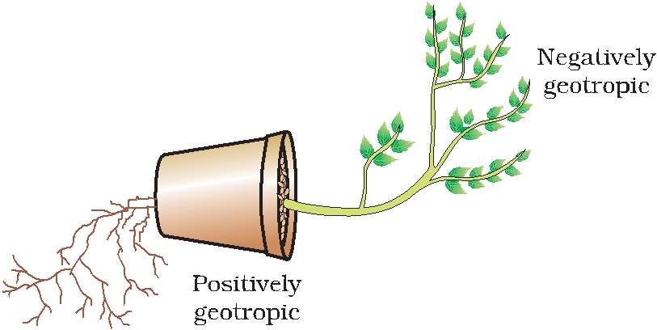
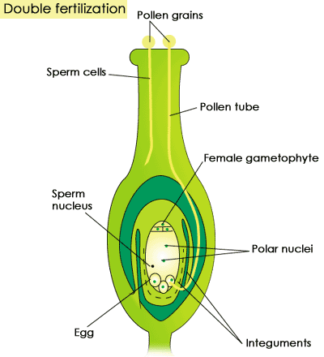
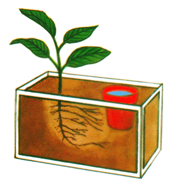
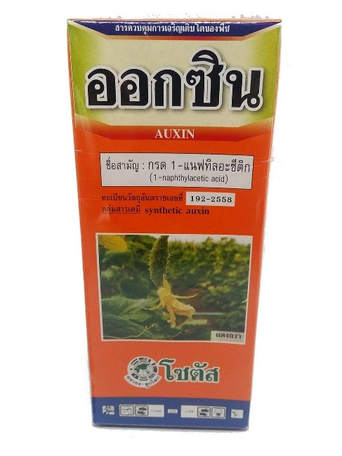
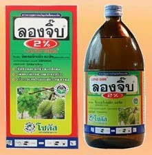
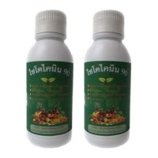
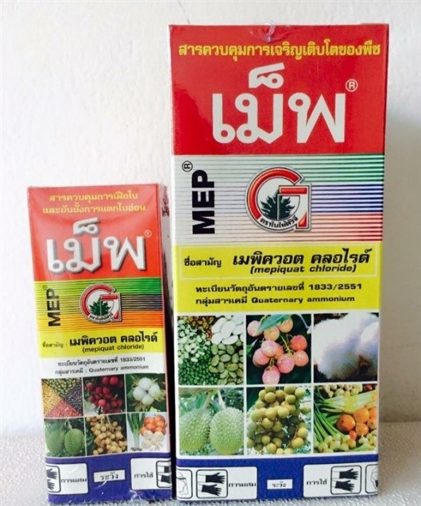
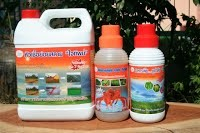
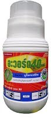

- - เนื้อเยื่อพืช
- - โครงสร้างและหน้าที่ของราก
- - หน้าที่และชนิดของราก
- - โครงสร้างและหน้าที่ของลำต้น
- ○ โครงสร้างภายในของลำต้นที่ตัดตามขวาง
- ○ โครงสร้างภายในของลำต้นพืชใบเลี้ยงเดี่ยว
- - โครงสร้างภายในของลำต้นพืชใบเลี้ยงเดี่ยว
- ○ ลำต้นเหนือดิน (aerial stem/terrestrial stem)
- ○ ลำต้นใต้ดิน (underground stem)
- ○ โครงสร้างภายนอกและภายในของใบ
- - หน้าที่ของใบ
- - การคายน้ำของพืช
- - ประเภทของการคายน้ำ
- - ปัจจัยในการควบคุมการคายน้ำ
- - การลำเลียงในพืชดอก
- ○ การลำเลียงสารอาหารของพืช (Translocation of Solute )
- ○ กลไกของการลำเลียงไปทาง Phloem
- ○ การลำเลียงธาตุอาหารของพืช
- ○ การลำเลียงน้ำของพืช
การตอบสนองของพืช
การตอบสนองของพืชต่อสิ่งแวดล้อม
1. การเคลื่อนไหวเนื่องจากการเจริญเติบโต (growth movement)
- การตอบสนองต่อสิ่งเร้าภายนอก (paratonic movement หรือ stimulus movement)
- การตอบสนองที่เกิดจากสิ่งเร้าภายใน (autonomic movement)
2. การเคลื่อนไหวเนื่องมาจากการเปลี่ยนแปลงแรงดันเต่ง (turgor movement)
3. การตอบสนองของพืชต่อสารควบคุมการเจริญเติบโต
การเคลื่อนไหวที่เกิดเนื่องจากการเจริญเติบโต (growth movement)
1. การตอบสนองที่เกิดจากสิ่งเร้าภายนอก (paratonic movement หรือ stimulus movement) มี 2 แบบคือ
1.1 แบบมีทิศทางเกี่ยวข้องสัมพันธ์กับสิ่งเร้า (tropism หรือ tropic movement) การตอบสนองแบบนี้อาจจะทำให้ส่วนของพืชโค้งเข้าหาสิ่งเร้าเรียกว่า positive tropism หรือเคลื่อนที่หนีสิ่งเร้าที่มากระตุ้นเรียกว่า negative tropism จำแนกได้ตามชนิดของสิ่งเร้าดังนี้
1.1.1 โฟโททรอปิซึม (phototropism) เป็นการตอบสนองของพืชที่ตอบสนองต่อสิ่งเร้าที่เป็นแสงพบว่าที่ปลายยอดพืช (ลำต้น) มีทิศทางการเจริญเติบโตเจริญเข้าหาแสงสว่าง (positive phototropism) ส่วนที่ปลายรากจะมีทิศทางการเจริญเติบโตหนีจากแสงสว่าง (negative phototropism)

1.1.2 จีโอทรอปิซึม (geotropism) เป็นการตอบสนองของพืชที่ตอบสนองต่อแรงโน้มถ่วงของโลกโดยรากพืชจะเจริญเข้าหาแรงโน้มถ่วงของโลก (positive geotropism) เพื่อรับน้ำและแร่ธาตุจากดิน ส่วนปลายยอดพืช (ลำต้น) จะเจริญเติบโตในทิศทางตรงข้ามกับแรงโน้มถ่วงของโลก (negative geotropism) เพื่อชูใบรับแสงสว่าง

1.1.3 เคมอทรอปิซึม (chemotropism) เป็นการตอบสนองของพืชโดยการเจริญเข้าหาหรือหนีจากสารเคมีบางอย่างที่เป็นสิ่งเร้าเช่นการงอกของหลอดละอองเรณูไปยังรังไข่ของพืชโดยมีสารเคมีบางอย่างเป็นสิ่งเร้า

1.1.4 ไฮโดรทรอปิซึม (hydrotropism) เป็นการตอบสนองของพืชที่ตอบสนองต่อความชื้น ซึ่งรากของพืชจะงอกไปสู่ที่มีความชื้น

1.1.5 ทิกมอทรอปิซึม (thigmotropism) เป็นการตอบสนองของพืชบางชนิดที่ตอบสนองต่อการสัมผัสเช่น การเจริญของมือเกาะ (tendril) ซึ่งเป็นโครงสร้างที่ยื่นออกไปพันหลักหรือเกาะบนต้นไม้อื่นหรือพืชพวกที่ลำต้นแบบเลื้อยจะพันหลักในลักษณะบิดลำต้นไปรอบๆเป็นเกลียว เช่น ต้นตำลึง ต้นพลู ต้นองุ่น ต้นพริกไทย เป็นต้น

1.2 แบบมีทิศทางที่ไม่สัมพันธ์กับทิศทางของสิ่งเร้า (nasty หรือ nastic movement) การตอบสนองแบบนี้จะมีทิศทางคงที่คือ การเคลื่อนขึ้นหรือลงเท่านั้น ไม่ขึ้นกับทิศทางของสิ่งเร้า
การบานของดอกไม้ (epinasty) เกิดจากกลุ่มเซล์ด้านในหรือด้านบนของกลีบดอกยืดตัวหรือขยายขนาดมากกว่ากลุ่มเซลล์ด้านนอกหรือด้านล่าง
การหุบของดอกไม้ (hyponasty) เกิดจากกลุ่มเซลล์ด้านนอกหรือด้านล่างของกลีบดอกยืดตัวหรือขยายขนาดมากกว่ากลุ่มเซลล์ด้านมนหรือด้านบน ตัวอย่างเช่น
- ดอกบัว ส่วนมากมักหุบในตอนกลางคืนและบานในตอนกลางวัน
- ดอกกระบองเพชร ส่วนมากจะบานในตอนกลางคืนและหุบในตอนกลางวัน
การบานของดอกไม้ขึ้นอยู่กับชนิดของพืชและสิ่งเร้าเช่น อุณหภูมิ ความชื้น แสง เป็นต้น ถ้าสิ่งเร้าเป็นแสงแล้วทำให้เกิดการตอบสนอง (เกิดการเคลื่อนไหว ด้วยการบานการหุบของดอกไม้) โฟโตนาสที (photonasty) ถ้าอุณหภูมิเป็นสิ่งเร้าก็เรียกว่า เทอร์มอนาสที (thermonasty) ตัวอย่างเช่น ดอกบัวส่วนมากมักหุบในตอนกลางคืนและบานในตอนกลางวันแต่ดอกกระบองเพชรจะบานในตอนกลางคืนและจะหุบในตอนกลางวัน ที่เป็นเช่นนี้เนื่องจากในตอนกลางคืนจะมีอุณหภูมิต่ำหรือเย็นลงทำให้กลุ่มเซลล์ด้านในของกลีบดอกเจริญมากกว่าด้านนอกจึงทำให้กลีบดอกบานออกแต่ตอนกลางวันอากาศอุ่นขึ้นอุณหภูมิสูงขึ้นจะทำให้กลุ่มเซลล์

โฟโตนาสที (photonasty)
2. การตอบสนองที่เกิดจากสิ่งเร้าภายในของต้นพืชเอง (autonomic movement) เป็นการตอบสนองที่เกิดจากการกระตุ้นจากสิ่งเร้าภายในจำพวกฮอร์โมนโดยเฉพาะออกซิน ทำให้การเจริญของลำต้นทั้งสองด้านไม่เท่ากัน ได้แก่
2.1 การเอนหรือแกว่งยอดไปมา (nutation movement) เป็นการเคลื่อนไหวที่เกิดเฉพาะส่วนยอดของพืชสาเหตุเนื่องจากด้านสองด้านของลำต้น (บริเวณยอดพืช) เติบโตไม่เท่ากันทำให้ยอดพืชโยกหรือแกว่งไปมาขณะที่ปลายยอดกำลังเจริญเติบโต
2.2 การบิดลำต้นไปรอบๆเป็นเกลียว (spiral movement) เป็นการเคลื่อนไหวที่ปลายยอดค่อยๆบิดเป็นเกลียวขึ้นไป เมื่อเจริญเติบโตขึ้นซึ่งเป็นการเคลื่อนไหวที่มองไม่เห็นด้วยตาเปล่า โดยปกติเราจะมองเห็นส่วนยอดของพืชเจริญเติบโตขึ้นไปตรงๆ แต่แท้จริงแล้วในส่วนที่เจริญขึ้นไปนั้นจะบิดซ้ายขวาเล็กน้อย เนื่องจากลำต้นทั้งสองด้านเจริญเติบโตไม่เท่ากันเช่นเดียวกับนิวเทชัน ซึ่งเรียกว่า circumnutation พืชบางชนิดมีลำต้นอ่อนทอดเลื้อยและพันหลักในลักษณะการบิดลำต้นไปรอบๆเป็นเกลียวเพื่อพยุงลำต้นเรียกว่า twining เช่น การพันหลักของต้นมะลิวัลย์ พริกไทย อัญชัน ตำลึง ฯลฯ
การเคลื่อนไหวที่เกิดเนื่องจากการเปลี่ยนแปลงแรงดันเต่ง (turgor movement)
ปกติพืชจะมีการเคลื่อนไหวตอบสนองต่อการสัมผัส (สิ่งเร้าจากภายนอก) ช้ามากแต่มีพืชบางชนิดที่ตอบสนองได้เร็ว โดยการสัมผัสจะไปทำให้มีการเปลี่ยนแปลงของปริมาณน้ำภายในเซลล์ทำให้แรงดันเต่ง (turgor pressure) ของเซลล์เปลี่ยนแปลงไป ซึ่งเป็นไปอย่างรวดเร็วและไม่ถาวรซึ่งมีหลายแบบคือ1. การหุบของใบจากการสะเทือน (contract movement)
- การหุบใบของต้นไมยราบตรงบริเวณโคนก้านใบและโคนก้านใบย่อยจะมีกลุ่มเซลล์ชนิดหนึ่ง (เซลล์พาเรงคิมา) เรียกว่า พัลไวนัส (pulvinus) ซึ่งเป็นเซลล์ที่มีขนาดใหญ่และผนังเซลล์บาง มีความไวสูงต่อสิ่งเร้าที่มากระตุ้นเช่น การสัมผัส เมื่อสิ่งเร้ามาสัมผัสหรือกระตุ้นจะมีผลทำให้แรงดันเต่งของกลุ่มเซลล์ดังกล่าวเปลี่ยนแปลงอย่างรวดเร็วคือเซลล์จะสูญเสียน้ำให้กับเซลล์ข้างเคียงทำให้ใบหุบลงทันทีหลังจากนั้นสักครู่น้ำจะซึมผ่านกลับเข้าสู่เซลล์พัลไวนัสอีกแรงดันเต่งในเซลล์เพิ่มขึ้นทำให้แรงดันเต่งและใบกางออก

- การหุบของใบพืชพวกที่มีการเปลี่ยนแปลงรูปร่างไปเพื่อจับแมลงได้แก่ ใบของต้นหม้อข้าวหม้อแกงลิง ต้นสาหร่ายข้าวเหนียว ต้นกาบหอยแครง ต้นหยาดน้ำค้าง เป็นต้น พืชพวกนี้ถือได้ว่าเป็นพืชกินแมลงจะมีการเปลี่ยนแปลงรูปร่างของใบเพื่อทำหน้าที่จับแมลง ภายในใบจะมีกลุ่มเซลล์หรือขนเล็กๆ (hair) ที่ไวต่อสิ่งเร้าอยู่ทางด้านในของใบเมื่อแมลงบินมาถูกหรือมาสัมผัสจะเกิดการสูญเสียน้ำ ใบจะเคลื่อนไหวหุบทันทีแล้วจึงปล่อยเอนไซม์ออกมาย่อยโปรตีนของแมลงให้เป็นกรดอะมิโนจากนั้นจึงดูดซึมที่ผิวด้านในนั้นเอง

2. การหุบใบตอนพลบค่ำของพืชตระกูลถั่ว (sleep movement) เป็นการตอบสนองต่อการเปลี่ยนแปลงความเข้มของแสงของพืชตระกูลถั่ว เช่น ใบก้ามปู ใบมะขาม ใบไมยราบ ใบถั่ว ใบแค ใบกระถิน ใบผักกระเฉด เป็นต้น โดยที่ใบจะหุบ ก้านใบจะห้อยและลู่ลงในตอนพลบค่ำ เนื่องจากแสงสว่างลดลง ซึ่งชาวบ้านเรียกว่า “ต้นไม้นอน” แต่พอรุ่งเช้าใบก็จะกางตามเดิม การตอบสนองเช่นนี้เกิดจากการเปลี่ยนแปลง แรงดันเต่งของกลุ่มเซลล์พัลไวนัสที่โคนก้านใบโดยกลุ่มเซลล์พัลไวนัสนี้เป็นกลุ่มเซลล์ขนาดใหญ่และผนังเซลล์บาง มีความไวสูงต่อสิ่งเร้าที่มากระตุ้น เมื่อไม่มีแสงสว่างหรือแสงสว่างลดลงมีผลทำให้เซลล์ด้านหนึ่งสูญเสียน้ำให้กับช่องว่างระหว่างเซลล์ที่อยู่เคียงข้างทำให้แรงดันเต่งลดลงใบจึงหุบลง ก้านใบจะห้อยและลู่ลง พอรุ่งเช้ามีแสงสว่างน้ำจะเคลื่อนกลับมาทำให้แรงดันเต่งเพิ่มขึ้นและเซลล์เต่งดันให้ที่ลู่นั้นกางออก
3. การเปิดปิดของปากใบ (guard cell movement) การเปิด-ปิดของปากใบขึ้นอยู่กับความเต่งของเซลล์คุม (guard cell) ในตอนกลางวันเซลล์คุมมีกระบวนการสังเคราะห์ด้วยแสงเกิดขึ้น ทำให้ภายในเซลล์คุมมีระดับน้ำตาลสูงขึ้น น้ำจากเซลล์ข้างเคียงจะซึมผ่านเข้าเซลล์คุม ทำให้เซลล์คุมมีแรงดันเต่งเพิ่มขึ้นดันให้ผนังเซลล์คุมที่แนบชิดติดกันให้เผยออกจึงทำให้ปากใบเปิด แต่เมื่อระดับน้ำตาลลดลงเนื่องจากไม่มีกระบวนการสังเคราะห์ด้วยแสงน้ำก็จะซึ่มออกจากเซลล์คุมทำให้แรงดันเต่งในเซลล์คุมลดลงเซลล์จะเหี่ยวและปากใบก็จะปิด
การตอบสนองต่อสิ่งเร้าของพืชด้วยการเคลื่อนไหวแบบต่างๆที่เกิดขึ้นจะมีผลต่อประสิทธิภาพในการดำรงชีวิตของพืชสรุปได้ดังนี้
1. การหันยอดเข้าหาแสงสว่าง ช่วยให้พืชสังเคราะห์อาหารได้อย่างทั่วถึง
2. การหันรากเข้าสู่ศูนย์กลางของโลก ช่วยให้รากอยู่ในดินซึ่งเป็นแหล่งที่พืชได้รับน้ำและแร่ธาตุ
3. การเจริญเข้าหาสารเคมีของละอองเรณู ช่วยในการผสมพันธุ์ การขยายกลีบช่วยในการกระจายหรือรับละอองเกสร
4. การเคลื่อนไหวแบบ nutation , spiral movement และ twining movement ช่วยให้พืชเกาะพันกับสิ่งอื่นๆสามารถชูกิ่งหรือยอด เพื่อรับแสงแดด หรือชูดอกและผลเพื่อการสืบพันธุ์หรือกระจายพันธุ์
5. การหุบของต้นกาบหอยแครงช่วยในการจับแมลงหรืออาหาร การหุบของไมยราบช่วยในการหลบหลีกศัตรู
กลไกการตอบสนองของพืช โปรดระลึกเสมอว่าไม่ว่าจะเป็นการตอบสนองต่อปัจจัยภายนอกหรือปัจจัยภายในพืช กระบวนการหรือกลไกที่เกิดขึ้นและขั้นตอนที่เกิดการตอบสนองจะมีความซับซ้อนมาก (Complexity ) เสมอแม้ว่าจะเกิดจากปัจจัยเพียงปัจจัยเดียวในตอนเริ่มต้น
การเจริญเข้าหาแสงสว่าง ( Positive Phototropism ) ของเยื่อหุ้มยอดอ่อนของข้าวโอ๊ต (Oat seedling coleoptile)

การทดลองของ F. W. Went ในปี ค.ศ. 1926 หรือ ปี พ.ศ. 2469
เกี่ยวกับการโค้งเข้าหาแสงของเยื่อหุ้มยอดอ่อน (coleoptile) ของต้นกล้าข้าวโอ๊ต
เกี่ยวกับการโค้งเข้าหาแสงของเยื่อหุ้มยอดอ่อน (coleoptile) ของต้นกล้าข้าวโอ๊ต

การทดลองของ Darwin และ Boysen-Jensen
สารควบคุมการเจริญเติบโตของพืช
สารควบคุมการเจริญเติบโต หรือที่เรียกกันทั่วไปว่า ฮอร์โมน จัดเป็นกลุ่มของสารที่กำลังได้รับความสนใจอย่างมากในปัจจุบันนี้ เนื่องจากสามารถใช้ประโยชน์ได้กว้างขวางและเห็นผลได้ค่อนข้างเด่นชัด โดยมากใช้ในการติดผล เร่ง หรือชะลอการแก่ การสุกซึ่งลักษณะต่าง ๆ เหล่านี้ถูกควบคุมโดยสารแต่ละชนิดแตกต่างกันไปดังนั้น ถ้ามีการเลือกใช้ได้อย่างถูกต้องก็จะทำให้เราสามารถควบคุมการเจริญเติบโตของพืชได้ตามต้องการ
เมื่อกล่าวถึงฮอร์โมนพืช (plant hormones) ก็เชื่อว่าทุกท่านคงเคยได้ยินและรู้จักว่าเป็นสารที่ใช้ฉีดพ่นให้ต้นไม้เพื่อให้มีการออกดอก ติดผลตามที่ต้องการ แต่โดยความจริงแล้ว คำว่า ฮอร์โมน พืชนี้มีความหมายในเชิงวิชาการว่า เป็นสารอินทรีย์ที่พืชสร้างขึ้นเองในปริมาณน้อยมาก แต่มีผลในด้านการส่งเสริมหรือยับบั้งการเปลี่ยนแปลงทางสรีรวิทยาภายในต้นพืชนั้น ๆ ทั้งนี้ไม่รวมพวกน้ำตาลหรือสารอาหารที่เป็นอาหารพืชโดยตรง จะเห็นได้ว่าพืชสร้างฮอร์โมนขึ้นน้อยมาก โดยมีปริมาณเพียงพอที่จะควบคุมการ เติบโตภายในต้นพืชนั้น ๆ ดังนั้นการสกัดฮอร์โมนออกมาจากต้นพืช เพื่อไปพ่นให้ต้นไม้อื่น ๆ จึงเป็นเรื่องยากและไม่คุ้มค่า จึงได้มีการค้นคว้าและสังเคราะห์สารต่าง ๆ ซึ่งมีคุณสมบัติคล้ายฮอร์โมนธรรมชาติขึ้นมาใช้ประโยชน์แทนเมื่อเป็นเช่นนี้ สารที่เรานำมาฉีดพ่นให้ต้นพืชเพื่อให้เกิดลักษณะตามที่เราต้องการนั้น จึงไม่ใช่ฮอร์โมนพืช แต่จัดเป็นสารสังเคราะห์ ซึ่งมีคุณสมบัติคล้ายฮอร์โมน จึงได้มีการบัญญัติศัพท์ทางวิชาการขึ้นมา ว่าสารควบคุมการเจริญเติบโตของพืช (plant growth regulators) ซึ่งมีความหมายถึงฮอร์โมนพืชและสารสังเคราะห์ มีคุณสมบัติในการกระตุ้นยับยั้งหรือเปลี่ยนแปลงกระบวนการทางสรีรวิทยาของพืชได
การเติบโตของพืชในทุกขั้นตอนล้วนแล้วแต่ถูกควบคุมโดยฮอร์โมนทั้งสิ้น ไม่ว่าจะเป็นการงอกของเมล็ดจนกระทั่งต้นตาย ดังนั้นการใช้สารสังเคราะห์ ซึ่งมีคุณสมบัติคล้ายฮอร์โมนฉีดพ่นให้กับต้นพืชจึงเป็นการเปลี่ยนระดับความสมดุลของฮอร์โมนภายใน ทำให้ต้นพืชแสดงลักษณะต่าง ๆ ออกมานอกเหนือการควบคุมของธรรมชาติแต่ก่อนที่จะใช้สารสังเคราะห์เหล่านี้ให้ได้ผลควรที่จะต้องศึกษาคุณสมบัติฮอร์โมนและสารสังเคราะห์ชนิดต่าง ๆ โดยละเอียดเสียก่อน
สารควบคุมการเจริญเติบโตแต่ละชนิดมีคุณสมบัติแตกต่างกันไป ซึ่งสามารถแบ่งออกเป็นกลุ่มย่อยได้ 7 กลุ่มด้วยกัน คือ

ตัวอย่างสารประเภทออกซิน
1. ออกซิน (auxins) เป็นกลุ่มของสารที่มีหน้าที่เกี่ยวข้องกับการขยายขนาดของเซลล์ (cell enlargement) การแบ่งตัวของเซลล์ในแคมเบี่ยม การขยายขนาดของใบ การเกิดราก การขยายขนาดของผล ป้องกันการหลุดร่วงของใบ ดอก ผล ยับยั้งการแตกตาข้าง ฮอร์โมนที่พืชสร้างขึ้นก็คือ ไอเอเอ (IAA) โดยสร้างมากที่บริเวณปลายยอก ปลายราก ผลอ่อน และบริเวณที่มีเนื้อเยื่อเจริญ (meristematic tissue) อยู่มาก ปริมาณ ไอเอเอภายในเนื้อเยื่อพืชแต่ละส่วนมีมากน้อยแตกต่างกันไป โดยจะมีอยู่มากในส่วนที่กำลังเจริญเติบโต การรักษาระดับปริมาณภายในเนื้อเยื่อพืชถูกควบคุมโดยระบบการสร้างและการทำลายพร้อม ๆ กันไป ถ้าเป็นเนื้อเยื่อที่กำลังเจริญเติบโตจะมีการสร้างมากกว่าการทำลาย และในทางตรงกันข้าม ในเนื้อเยื่อที่มีอายุมากขึ้น จะมีการทำลายมากกว่าการสร้าง สารสังเคราะห์ที่จัดอยู่ในกลุ่มออกซิน ที่ใช้กันมากได้แก่ เอ็นเอเอ (NAA) ไอบีเอ (IBA) 4-ซีพีเอ (4-CPA) 2,4-ดี (2,-4-D)

ตัวอย่างสารประเภทจิบเบอเรลลิน
2. จิบเบอเรลลิน (gibberellins) เป็นสารที่เกี่ยวข้องกับการยืดตัวของเซลล์ (cell elongation) ทำลายการพักตัวของพืช กระตุ้นการออกดอกของพืชบางชนิด และยับยั้งการออกดอกของพืชบางชนิด สารกลุ่มนี้มีทั้งที่พืชสร้างขึ้นเอง และเชื้อราบางชนิดสร้างขึ้น ในปัจจุบันพบจิบเบอเรลลินทั้งหมด 71 ชนิด โดยที่ทุกชนิดเรียกชื่อเหมือนกันคือ จิบเบอเรลลิน เอ หรือ จีเอ (gibberellin A) (GA) แต่มีหมายเลขตามหลังตั้งแต่ 1 ถึง 71 เช่น จีเอ 3, จีเอ 4, จีเอ 7 (GA3 , GA4 ,GA7) สารจีเอ 3 เป็นจิบเบอเรลลินที่นำมาใช้มากทางการเกษตร โดยมีชื่อเรียกเฉพาะของสาร จีเอ 3 ว่า จิบเบอเรลลิกแอซิค (gibberellic acid) พืชสามารถสร้างจีเอ3 ได้โดยมีปริมาณน้อยมาก ซึ่งจีเอ 3 ที่นำมาใช้ทางการเกษตรนั้น ได้มาจากการเพาะเลี้ยงเชื้อราบางชนิดแล้วสกัดจีเอ 3 ออกมาเนื่องจากปัจจุบันยังไม่สามารถสังเคราะห์ จีเอ ได้ด้วยวิธีทางเคมี

ตัวอย่างสารประเภทไซโตไคนิน
3. ไซโตไคนิน (cytokinins) เกี่ยวข้องกับการแบ่งเซลล์ของพืช ชะลอการแก่ชราและกระตุ้นการแตกตาข้าง พบมากในบริเวณเนื้อเยื่อเจริญและในศัพภะ (embryo) ส่วนใหญ่แล้วไซโตไคนินมีการเคลื่อนย้ายน้อย แต่มีคุณสมบัติสำคัญในการดึงสารอาหารต่าง ๆ มายังแหล่งที่มีไซโตไคนินสะสมอยู่ (cytokinin-induced translocaton) ฮอร์ดมนที่พบในพืชได้แก่ ซีอาติน (zeatin) ส่วนการสังเคราะห์ที่อยู่ในกลุ่มไซโตไคนิน ได้แก่ บีเอพี (BAP) ไคเนติน (Kinetin)

ตัวอย่างสารประเภท เอทิลินและสารปลดปล่อยเอทิลีน
4. เอทิลินและสารปลดปล่อยเอทิลีน ( ethylene and ethylene releasing compounds) เอทิลีนเป็นก๊าซชนิดหนึ่งและจัดเป็นฮอร์โมนพืช เนื่องจากพืชสร้างขึ้นมาได้ โดยมีผลควบคุมการแก่ชรา การสุก รวมทั้งการออกดอกของพืชบางชนิดและเกี่ยวของกับการหลุดร่วงของใบ ดอกผล การเหลืองของใบ การงอกของหัวพืช และเมล็ดพืชบางชนิด เอทิลีนจะสร้างมากในส่วนของพืชที่กำลังเข้าสู่ระยะชราภาพ (senescence) เช่น ในผลแก่หรือใบแก่ใกล้หลุดร่วง เนื่องจากเอทิลีนเป็นก๊าซดังนั้นจึงฟุ้งกระจายไปได้ทั่ว จึงไม่มีการเคลื่อนย้ายเหมือนกับฮอร์โมนในกลุ่มอื่น ๆ สารอินทรีย์บางชนิดมีคุณสมบัติคล้ายเอทิลีน เช่น อะเซทิลีน (acetylene) โปรปิลิน (propylene) ดังนั้นจึงอาจนำสารเหล่านี้มาใช้ประโยชน์ทางการเกษตรได้เช่นกัน ยกตัวอย่างได้แก่การใช้อะเซทิลีนในการบ่มผลไม้ และ เร่งการออกดอกของสับปะรด เป็นต้น แต่เนื่องจากว่าสารที่กล่าวมานี้เป็นก๊าซจึงมีความยุ่งยากในการใช้และไม่สามารถควบคุมความเข้มข้นได้แน่นอน โดยเฉพาะอย่างยิ่งการใช้ในแปลงปลูกพืช ดังนั้นจึงได้มีการสังเคราะห์สารบางชนิด ซึ่งเป็นของเหลวแต่สามารถปลดปล่อยหรือสลายตัวได้ ก๊าซเอทิลีน ซึ่งได้แก่ เอทีฟอน (ethephon) เอตาเซลาซิล (etacelasil) สารเอทีฟอน จัดว่าเป็นสารที่นำมาใช้ประโยชน์มากที่สุดในโลกชนิดหนึ่ง และในปัจจุบันใช้กันอย่างกว้างขวางในอุตสาหกรรมสับปะรด

ตัวอย่างสารประเภทสารชะลอการเจริญเติบโตของพืช
5. สารชะลอการเจริญเติบโตของพืช (plant growth retardants) สารกลุ่มนี้ไม่จัดเป็นฮอร์โมนพืช แต่เป็นสารสังเคราะห์ทั้งหมด มีคุณสมบัติสำคัญ คือยับยั้งการสร้างหรือยับยั้งการทำงานของฮอร์โมนจิบเบอเรลลินในพืช จึงมีผลลดการยืดตัวของเซลล์ทำให้ปล้องสั้น ใบหนา เขียวเข้ม กระตุ้นการออกดอกของพืชบางชนิดและมีคุณสมบัติอื่น ๆ ได้แก่ ทำให้พืชทนทานต่อสภาพแวดล้อมที่ไม่เหมาะสม เช่น ร้อนจัด เย็นจัด ดินแห้ง ดินเกลือ เพิ่มผลผลิตพืชบางชนิด เพิ่มการติดผลของพืชบางชนิด สารชะลอการเจริญเติบโตที่สำคัญได้แก่ แอนซิมิดอล (ancymidol) คลอมีควอน (chlormequat) แดมิโนไซด์ (daminozide) พาโคลบิวทราโซล (paclobutrazol)

ตัวอย่างสารประเภทสารยับยั้งการเจริญเติบโต
6. สารยับยั้งการเจริญเติบโต (plant growth inhibitors) สารกลุ่มนี้มีหน้าที่ในการถ่วงดุลกับสารเร่งการเติบโตพวกออกซิน จิบเบอเรลลิน และไซโตไคนิน เพื่อให้การเติบโตเป็นไปอย่างพอเหมาะพอดี ส่วนใหญ่มีหน้าที่ยับยั้งการแบ่งเซลล์ และการเติบโตของเซลล์ ทำให้เกิดการพักตัว (dormancy) และเกี่ยวข้องกับการหลุดร่วงของอวัยวะพืชฮอร์โมนในกลุ่มนี้มีพบในพืชมีกว่า 200 ชนิด แต่ที่สำคัญที่สุดและรู้จักกันดีคือ เอบีเอ (ABA) (abscisic acid) ในทางการเกษตรมีการใช้ประโยชน์จากสารกลุ่มนี้น้อยมาก อย่างไรก็ตามมีการใช้สารสังเคราะห์เพื่อประโยชน์บางอย่างเช่นยับยั้งการงอกของหัวมันฝรั่งและหอมหัวใหญ่ ระหว่างการเก็บรักษา ใช้แทนการเด็ดยอด (pinching) เพื่อกระตุ้นให้แตกตาข้าง รวมทั้งยับยั้งการเติบโตทางกิ่งใบ ซึ่งมีผลในการกระตุ้นดอกได้ในพืชบางชนิด สารสังเคราะห์ที่สำคัญได้แก่ คลอดฟลูรีนอล (Chlorflurenol) ไดกูแลกโซเดียม (dikegulac sodium) มาเลอิกไฮดราไซด์ (maleic hydrazide) ทีไอบีเอ (TIBA)
7. สารอื่น ๆ (miscellaneous) เป็นกลุ่มสารที่มีคุณสมบัติแตกต่างจากทั้ง 6 กลุ่มที่กล่าวมาข้างต้น ส่วนใหญ่ใช้เพื่อประโยชน์เฉพาะอย่าง เช่น เพิ่มผลผลิต ขยายขนาดผล ป้องกันผลร่วง ช่วยในการแบ่งเซลล์ อย่างไรก็ตามยังจัดว่ามีประโยชน์ค่อนข้างน้อยและการใช้ยังไม่กว้างขวาง ยกตัวอย่างสารเหล่านี้ได้แก่ เออร์โกสติม , อโทนิก เป็นต้น
ประโยชน์ของสารควบคุมการเจริญเติบโต
สารควบคุมการเจริญเติบโตนำมาใช้ประโยชน์ได้กว้างขวางทั้งทางด้านการเพิ่มผลผลิต การผลิตพืชนอกฤดู ลดแรงงานในการผลิตพืช เป็นต้น การใช้สารให้ได้ผลตามที่ต้องการนั้นจะต้องทราบคุณสมบัติของสารแต่ละชนิดและเลือกใช้ให้ถูกกับวัตถุประสงค์ที่ต้องการ จึงขอยกตัวอย่างการใช้ประโยชน์จากสารเหล่านี้เพียงบางประการเพื่อใช้เป็นแนวทางในการผลิตพืชต่อไป
1. ออกซิน คุณสมบัติที่สำคัญของออกซินข้อหนึ่งคือ ความสามารถในการกระตุ้นการเกิดรากและการเจริญของราก จึงได้มีการนำออกซินมาใช้กับกิ่งปักชำหรหือกิ่งตอนของพืชทั่ว ๆ ไป เพื่อเร่งให้เกิดรากเร็วขึ้นและมากขึ้น
นอกจากนี้พืชบางชนิดออกรากได้ยาก แต่ถ้ามีการใช้ออกซินเข้าช่วยก็จะทำให้ออกรากได้ง่ายขึ้น สารที่นิยมใช้ในการเร่งรากคือ เอ็นเอเอ (NAA) และไอบีเอ (IBA) ซึ่งทั้ง 2 ชนิดนี้จัดว่าเป็นออกซินอย่างอ่อน มีพิษต่อพืชน้อย รากที่เกิดขึ้นจากการใช้สาร 2 ชนิดนี้จึงมักไม่มีอาการผิดปกติ แต่ถ้าใช้สารพวก 2,4-ดี หรือ 4-ซีพีเอ ซึ่งฤทธิ์ของออกซินสูงจะทำให้รากผิดปกติ คือกุดสั้นรากหน้าเป็นกระจุก ประโยชน์ของออกซินอีกข้อหนึ่งคือ ใช้ป้องกันผลร่วงได้ในพืชหลายชนิด เช่น มะม่วง มะนาว ส้ม ลางสาด ขนุน มะละกอ เนื่องจากออกซินมีคุณสมบัติยับยั้งการสร้างรอยแยก (abscission layer) ในบริเวณขั้วผลได้ อย่างไรก็ตาม ออกซินไม่สามารถยับยั้งการร่วงของผลได้ในบางกรณี เช่น การร่วงเนื่องจากโรคและแมลงเข้าทำลาย การร่วงของผลที่ไม่มีการปฎิสนธิเกิดขึ้น หรือการร่วงเนื่องจากความผิดปกติของผล ออกซินที่นิยมใช้ในการป้องกันการร่วงของผลคือ เอ็นเอเอ , 2 , 4-ดี และ 4-ซีพีเอ แต่จะไม่ใช้ ไอบีเอ เนื่องจาก ไอบีเอ ก่อให้เกิดพิษกับใบพืช
ทางด้านการเร่งดอกนั้น อาจกล่าวได้ว่า ออกซินไม่มีคุณสมบัติทางด้านนี้โดยตรง ในต่างประเทศเคยมีการใช้ เอ็นเอเอ เพื่อเร่งดอกสับปะรด ซึ่งก็ได้ผลดีพอสมควร ต่อมาจึงพบว่าการที่สับปะรดออกดอกได้นั้น เกิดขึ้นจากการที่ เอ็นเอเอไปกระตุ้นให้ต้นสับปะรดสร้างเอทิลีนขึ้นมา และเอทิลีนนั้นเองเป็นตัวกระตุ้นให้เกิดดอก
ผลทางด้านอื่น ๆ ของออกซินได้แก่ การเปลี่ยนเพศดอก ซึ่งปัจจุบันชาวสวนเงาะในประเทศไทยใช้กันอยู่ทุกแห้ง โดยใช้ เอ็นเอเอ พ่นไปที่ช่อดอกเงาะบางส่วน ทำให้ช่อดอกที่ถูกสารเปลี่ยนจากดอกสมบูรณ์เพศที่ทำหน้าที่ตัวเมียกลายเป็นดอกตัวผู้ขึ้นมาแทนซึ่งทำให้เกิดการถ่ายละอองเกสรและเกิดการปฎิสนธิขึ้นได้ การใช้ออกซินความเข้มข้นสูง ไม่ว่าชนิดใดตาม มักจะก่อให้เกิดความเป็นพิษกับพืช เช่น ใบร่วง ต้นชะวักการเติบโต จนกระทั่งทำให้ต้นตายได้ ดังนั้นจึงมีการใช้สาร 2,4-ดี ซึ่งมีฤทธิ์ของออกซินสูงมาก เป็นยากำจัดวัชพืชอย่างกว้างขวาง
2. จิบเบอเรลลิน มีคุณสมบัติสำคัญเกี่ยวข้องกับการยืดตัวของเซลล์ ดังนั้นจึงใช้ในการเร่งการเติบโตของพืชทั่ว ๆ ไปได้ผักกินใบหลายชนิดตอบสนองต่อจิบเบอเรลลินได้ดี โดยจะมีการเติบโตของเซลล์รวดเร็วขึ้น ทำให้ได้ผลผลิตเพิ่มขึ้น ผักบางชนิดที่มีการเติบโตของต้นเป็นแบบกระจุก (rosette plant) เช่น ผักกาดหอมห่อ ผักกาดขาวปลี กะหล่ำปลี ถ้ามีการใช้จิบเบอเรลลินกับพืชเหล่านี้ในระยะต้นกล้า จะทำให้เกิดการยืดตัวของต้นอย่างรวดเร็ว และออกดอกได้ ซึ่งเป็นประโยชน์ในแง่การผลิตเมล็ดพันธุ์ในกรณีของไม้ผลยืนต้นหลายชนิด เช่น มะม่วง ส้ม และไม้ผลเขตหนาวอื่น ๆ พบว่า จิบเบอเรลลินมีผลเร่งการเติบโตทางด้านกิ่งใบและยับยั้งการออกดอก ดังนั้นในกรณีที่ต้องการเร่งใบโดยเฉพาะอย่างยิ่งในระยะต้นกล้าจึงอาจใช้จิบเบอเรลลินให้เป็นประโยชน์ได้ จิบเบอเรลลินยังมีผลช่วยขยายขนาดผลได้ เช่น องุ่น มะม่วง ซึ่งในปัจจุบันมีการใช้อยู่ในบางสวนของประเทศไทย ประโยชน์ทางด้านอื่น ๆ ของจิบเบอเรลลิน ได้แก่ ใช้ในการเปลี่ยนแปลงดอกของพืชยางชนิด เช่น พืชตระกูลแตง และข้าวโพดหวาน ให้มีดอกตัวผู้มากขึ้น เพื่อประโยชน์ในการถ่ายละอองเกสรและยังใช้ทำลายการพักตัวของหัวมันฝรั่งและเมล็ดพืชยางชนิดได้
3. ไซโตไคนิน คุณสมบัติในการช่วยแบ่งเซลล์ของไซโตไคนินมีประโยชน์ในงานเพาะเลี้ยงเนื้อเยื่อพืชเป็นอย่างมาก โดยใช้ผสมเข้าไปในสูตรอาหารเพื่อช่วยการเติบโตของแคลลัสและกระตุ้นให้ก้อนแคลลัสพัฒนากลายเป็นต้นได้ ประโยชน์ทางด้านอื่นของไซโตไคนินมีค่อนข้างกำจัด นอกจากการนำมาใช้เร่งการแตกตาของพืช ซึ่งมีประโยชน์ในด้านการควบคุมทรงพุ่มและเร่งการแตกตาของพืชที่ขยายพันธุ์ด้วยการติดตาแล้ว ไซโตไคนินยังมีคุณสมบัติชะลอการแก่ชราของพืชได้ จึงสามารถยืดอายุการเก็บรักษาผักกินใบและผลไม้ รวมทั้งดอกไม้ได้หลายชนิด แต่อย่างไรก็ตามเรื่องนี้เป็นเพียงงานทดลองเท่านั้น ยังไม่สามารถนำมาใช้ประโยชน์ได้จริงจัง
4. เอทิลีนและสารปลดปล่อยเอทิลีน เป็นสารเร่งการสุกของผลไม้จึงใช้ในการบ่อมผลไม้โดยทั่ว ๆ ไป การสุกของผลไม้ตามปกติก็เกิดจากการที่ผลไม้นั้นสร้างเอทิลีนกับผลไม้ที่แก่จัดจึงสามารถเร่งให้เกิดการสุกได้เร็วกว่าปกติ โดยที่คุณภาพของผลไม้ไม่ได้เปลี่ยนไป ในต่างประเทศใช้ก๊าซเอทิลีนเป็นตัวบ่อมผลไม้โดยตรง แต่ต้องสร้างห้องบ่มโดยเฉพาะ ส่วนในประเทศไทยไม่มีห้องบ่อมจึงใช้ถ่านก๊าซ (calcium Carbide) ในการบ่อมผลไม้แทน โดยที่ถ่านก๊าซเมื่อทำปฎิกริยากับน้ำจะได้ก๊าซอะเซ่ทิลีนออกมา ซึ่งมีผลเร่งการสุกเหมือนกับเอทิลิน เกษตรกรบางรายเริ่มนำ เอทิฟอน เข้ามาใช้พ่มผลไม้ แต่ยังไม่ผู้ใดให้คำยืนยันในเรื่องพิษตกค้างของสารนี้ เอทีฟอนเป็นสารปลดปล่อยเอทิลีนซึ่งนำมาใช้ประโยชน์ได้กว้างขวาง เช่น ใช้ในการเร่งดอกสับปะรด เร่งการไหลและเพิ่มปริมาณน้ำยางพาราและยางมะละกอ เร่งการแก่ของผลไม้บนต้นไม้แก่พร้อมกัน เช่น เงาะ มะม่วง ลองกอง องุ่น มะเขือเทศ กาแฟ เร่งการแก่ของใบยาสูบ และมีแนวโน้มที่จะนำสารนี้มาใช้ประโยชน์ได้อีกมากโดยเฉพาะอย่างยิ่งเพื่อเร่งการแก่และการสุกของผลไม้
5. สารชะลอการเจริญเติบโตของพืช มีผลยับยั้งจิบเบอเรลลิน ดังนั้น ลักษณะใดก็ตามที่ถูกควบคุมโดยจิบเบอเรลลิน ก็สามารถเปลี่ยนแปลงได้โดยการใช้สารชะลอการเจริญเติบโตคุณสมบัติสำคัญของสารกลุ่มนี้คือ ยับยั้งการยืดตัวของปล้อง ทำให้ต้นเตี้ย กะทัดรัด จึงมีประโยชน์มากในการผลิตไม้กระถางประดับเพื่อให้มีทรงพุ่มสวยงาม (compact) และยังมีประโยชน์สำหรับการผลิตไม้ผลโดยระบบปลูกชิด ( high density planting) คุณสมบัติอีกประการหนึ่งของสารคือ ทำให้พืชทนทานต่อสภาพแวดล้อมที่ไม่เหมาะสม ดังนั้นจึงอาจใช้เพิ่มผลผลิตผักกาดขาวปลี และผักกาดเขียวปลี ซึ่งปลูกในฤดูร้อนได้ ประโยชน์ที่สำคัญของสารชะลอการเจริญเติบโตคือ สามารถเร่งดอกไม้ผลบางชนิดได้ เช่น การใช้พาโคลบิวทราโซล กับมะม่วงและลิ้นจี่ ทำให้มีช่อดอกมากขึ้นและการออกก่อนฤดูกาลปกติ ทั้งนี้เนื่องจากสารชะลอการเจริญเติบโตมีผลลดปริมาณจิบเบอเรลลินภายในต้น ซึ่งจิบเบอเรลลินมีผลยับยั้งการออกดอก ดังนั้นเมื่อจิบเบอเรลลินน้อยลงกว่าปกติ จึงทำให้ไม้ผลเหล่านี้ออกดอกได้
6. สารยับยั้งการเจริญเติบโตของพืช จากคุณสมบัติสำคัญในการยับยั้งการแบ่งเซลล์ของพืช จึงนำมาใช้ประโยชน์ได้ในบางกรณี เช่น การใช้ มาเลอิกไฮดราไซด์ยับยั้งการงอกของหัวใหญ่มันฝรั่ง ใช้ในการชักนำให้เกิดการพักตัวของต้นส้มเพื่อการสะสมอาหารสำหรับออกดอก สารยับยั้งการเติบโตมีผลยับบั้งการแบ่งเซลล์ในบริเวณปลายยอด หรืออาจกล่าวได้ว่า มีผลทำลายตายอด จึงทำให้ออกวินไม่สามารถสร้างขึ้นที่ปลายยอดได้ เมื่อเป็นเช่นนี้จึงทำให้ตาข้างเจริญออกมาแทน ซึ่งเป็นประโยชน์ในแง่ของการบังคับให้ต้นแตกกิ่งแขนงได้มาก เช่นการใช้ มาเลอิก ไฮดราไซด์ เพื่อการแตกพุ่มของไม้พุ่มหรือไม้ที่ปลูกตามแนวรั้ง การใช้คลอฟลูรีนอล เพิ่มจำนวนหน่อของสับปะรดและสับปะรดประดับ อย่างไรก็ตามประโยชน์ของสารกลุ่มนี้ยังมีน้อยมาก เมื่อเทียบกับกลุ่มอื่น ๆ
7. สารอื่น ๆ เป็นสารซึ่งมีคุณสมบัติผิดแปลกออกไป จนไม่อาจชี้เฉพาะลงไปได้ แต่ก็มีการใช้สารในกลุ่มนี้เพิ่มผลลิตพืชหลายชนิด เช่นกัน ได้แก่ การใช้เออร์โกสติมในการเพิ่มขนาดผลส้มหรือเพิ่มขนาดและน้ำหนักของผลสตรอเบอรี่ เพิ่มน้ำตาลในอ้อย โดยใช้ข้อควรระวังในการใช้สารควบคุมการเจริญเติบโต
สารควบคุมการเจริญเติบโตเป็นสารเคมีการเกษตรชนิดหนึ่งซึ่งจัดว่าเป็นสารที่มีพิษเช่นกัน ดังนั้นการใช้สารเหล่านี้จึงต้องให้ความระมัดระวังเช่นเดียวกับการใช้ยาฆ่าแมลง เช่น ห้ามใช้มือคนสาร หลีกเลี่ยงการสัมผัสสารเข้มข้นโดยตรง สวมชุดที่สามารถป้องกันการฟุ้งกระจายของสาร และอื่น ๆ ตามหลักเกณฑ์เพื่อความปลอดภัยในการใช้สารพิษ โดยทั่วไปแล้ว สารเหล่านี้มักสลายตัวได้ง่าย ซึ่งจะทำให้เสื่อมประสิทธิภาพได้เร็ว จึงควรเก็บรักษาไว้ในที่เย็นและไม่ถูกแสง ควรผสมสารให้เพียงพอต่อการใช้ในแต่ละครั้งเท่านั้น และเพื่อความมั่นใจในประสิทธิภาพของสารจึงไม่ควรใช้สารที่เก็บรักษาไว้นานเกิน 2 ปี